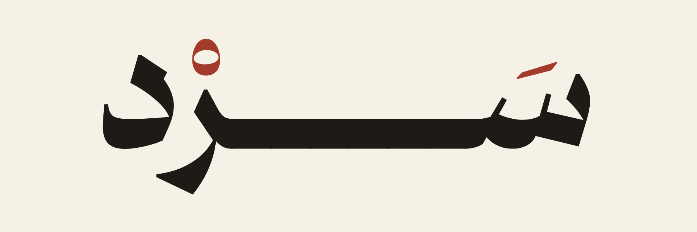
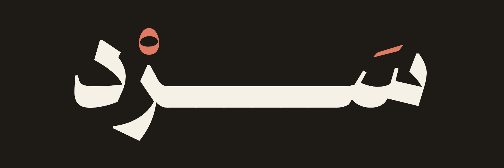
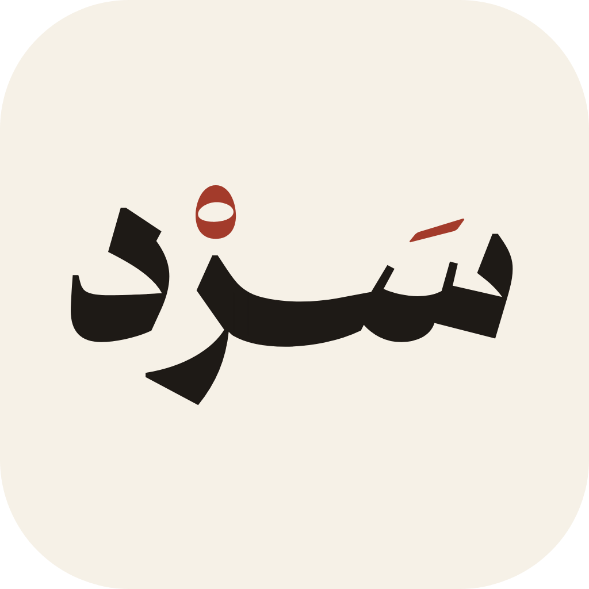
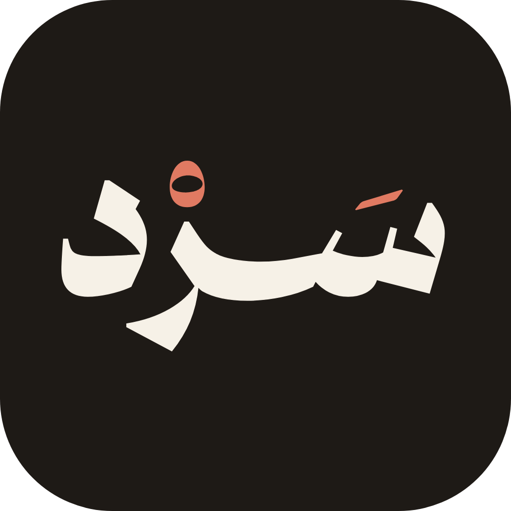

من الأساس إلى المعنى
سرد يشرح النصوص كأن أحدًا يجلس معك: يبدأ من الأساس، ويصل كل خطوة بالتي بعدها حتى المعنى النهائي، بلغة قارئ اليوم.
السرد في أصل اللغة نسج الدروع، وهو – كما في الصحاح – «تداخل الحلق بعضها في بعض»، ومنه «وقدّر في السرد». ثم قيل: سرد الحديث، إذا تابعه. وهذا عمل سرد بالضبط: كل فكرة حلقة تدخل في التي بعدها.
الكشيدة الطويلة بين السين والراء هي الخيط الذي يصل المحطات من الأساس إلى المعنى، فلا قفزة ولا محطة معلّقة. ولهذا لا تُحذف من الشعار الأساسي.
كانت النقط التي تبيّن الحركات تُكتب في المصاحف الأولى بالحُمرة، ويذكرها الغزالي في الإحياء. والحركة هي ما يجعل الكلمة مقروءة على وجهها، كما يجعل سرد النص مفهومًا؛ والسكون نفسه حلقة.
#1E1A16النص والشعار#F6F1E7الخلفية#A33B2Bالحركات والعناوين الصغيرة، بقدر قليل#6F675Eالبيانات الثانوية#E4DCCDالفواصل والإطارات


المسافة الحرة حول الشعار لا تقل عن ارتفاع السكون، ولا يُصغَّر الشعار الطويل عن 120 بكسل عرضًا؛ وما دونه للأيقونة.
الحُمرة للحركات وحدها في الشعار: لا تُلوَّن الحروف، ولا تُحذف الحركات، ولا تُستبدل الكشيدة بمسافة.
لا مؤثرات: لا ظلال ولا تدرّجات ولا إطارات حول الشعار؛ الورق والحبر والحُمرة تكفي.
وإن قلت لي: أليس هذا تكرارًا؟ قلت لك: الرابط الغامق في رأس الفقرة يقوم مقام الحمرة في المخطوطات، يدلّ العين على مفاصل الكلام.
الفاصل: سطر رفيع تتوسطه حلقة بالحُمرة، صدى للسكون في الشعار.